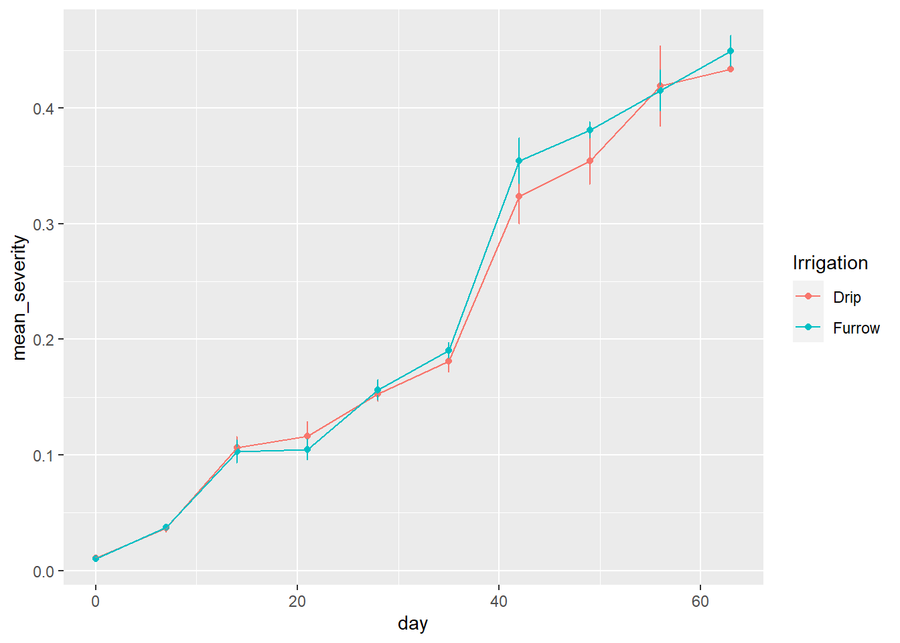

Teste para dados de levantamento e variável categorica nominal ano, resto cultural…
library(readxl)library(tidyverse)survey <-read_excel("dados-diversos.xlsx", "survey")survey |>count(year) # frequências de ocorrências por ano
# A tibble: 3 × 2
year n
<dbl> <int>
1 2009 265
2 2010 216
3 2011 185
# table é do R base e não do tidyverseq <-table (survey$year, survey$species) # em formato largolibrary(janitor)survey |>tabyl(year, species) |># dá o mesmo resultado do table, em formato largoadorn_percentages() # dá o vlaor em porcentagem
# gráfico de barras é indicado para visualizar frequências. O gráfico precisa ser no formato longosurvey |>count(year, species) |># dá o formato longo ggplot(aes(year, n, fill = species))+geom_col()
survey |>filter(residue !="NA") |>count(residue, species) |># dá o formato longo ggplot(aes(residue, n, fill = species))+geom_col()
# Chi-squared test# a hipótese nula é que a frequência são iguaisq <-table (survey$residue, survey$species)chisq.test(q)
Pearson's Chi-squared test with Yates' continuity correction
data: q
X-squared = 1.1997, df = 1, p-value = 0.2734
#Fisher's Exact Testfisher.test(q) # usado quando a frequência é baixa, número muito baixo, menor que 6
Fisher's Exact Test for Count Data
data: q
p-value = 0.2118
alternative hypothesis: true odds ratio is not equal to 1
95 percent confidence interval:
0.357205 1.311411
sample estimates:
odds ratio
0.6819103
q <-table (survey$residue, survey$inc_class)chisq.test(q) # p-value = 0.1058: classe da frequência da doença independe do resto cultural
Pearson's Chi-squared test with Yates' continuity correction
data: q
X-squared = 2.6165, df = 1, p-value = 0.1058
survey |>filter(residue !="NA") |>count(residue, inc_class) |># dá o formato longo ggplot(aes(residue, n, fill = inc_class))+geom_col()
Curva de progresso da severidade
Planilha dados-diversos, aba curve: dado temporal
curve <-read_excel("dados-diversos.xlsx", "curve")curve |>group_by(Irrigation, day) |># manter irrigation e day e desconsiderar repsummarise(mean_severity =mean(severity), sd_severity =sd(severity))|>ggplot(aes(day, mean_severity, color = Irrigation))+geom_point()+geom_errorbar(aes(ymin = mean_severity - sd_severity, ymax = mean_severity + sd_severity), width =0.1)+geom_line()

# Calcular área abaixo da curva do progresseo da doençalibrary(epifitter)curve3 <- curve |>group_by(Irrigation, rep) |>summarise(audpc =AUDPC(day, severity, y_proportion = F)) |># Aplicar T-test para dois grupos# Primeiro passar para o formato largopivot_wider(1, names_from = Irrigation, values_from = audpc)t.test(curve3$Drip, curve3$Furrow)
Welch Two Sample t-test
data: curve3$Drip and curve3$Furrow
t = -1.3773, df = 3.079, p-value = 0.26
alternative hypothesis: true difference in means is not equal to 0
95 percent confidence interval:
-1.3421436 0.5231436
sample estimates:
mean of x mean of y
13.38983 13.79933
# Calcular área abaixo da curva do tamanho da lesãolibrary(epifitter)tw2 <- tw |>group_by(exp, cult, silicio, rep) |>summarise(audpc =AUDPC(lesion_size, hai))tw2|>ggplot(aes(cult, audpc, color = silicio))+geom_boxplot()+facet_wrap(~exp)
ANOVA aov() para área abaixo da curva
# qualitativo, ANOVA para a área abaixo da curva# Experimetno fatorial. Primeiro, testar o experimento completo, se não for significativo, reduzir o modelo. aov1 <-aov(audpc ~exp*cult*silicio, data = tw2)summary(aov1) # não deu significativo